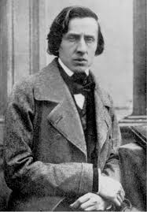

Frédéric Chopin
Born in 1810, Chopin was a Polish composer who is most widely known for his outstanding solo piano technique and genius composition ideas. At the age of 21, he relocated to Paris where he earned a living by selling his compositions and teaching piano lessons. He preferred to perform in front of small crouds, rather than large audiences. He died of tuberculosis at the age of 39.
| Links To My Favorite Compositions | |
| Nocturne Op. 9 No. 2 | Minute Waltz |
| Berceuse | Tristesse |